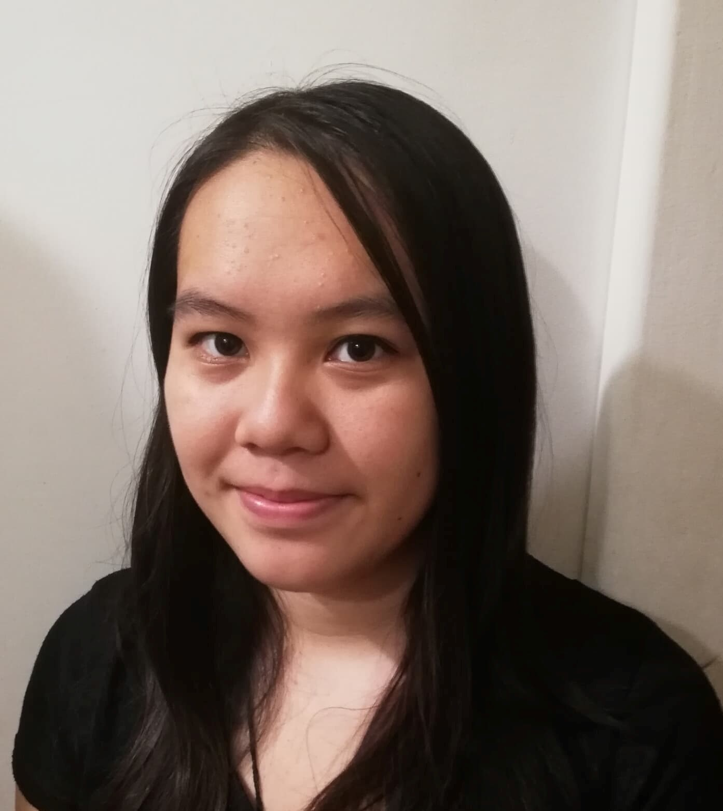

Préscilia LY
Hello! Moi, c'est Préscilia LY, 21 ans, étudiante en M1 PGE à Kedge Business School sur le campus de Marseille. Je suis encore à la recherche de ma voie mais pour l'instant je suis à la découverte du marketing digital.
Ma formation
Depuis Septembre 2021: M1 Programme Grandes Ecoles, spécialité Marketing Digital | Kedge Business School, campus de Marseille (13)
2020-2021: L3 Programme Grandes Ecoles | Kedge Business School, campus de Bordeaux (33)
2018-2020: Diplôme universitaire de Technologie (DUT) Gestion des Entreprises et des Administrations (GEA), option Gestion Comptable et Financière (GCF) | IUT de Sceaux (92)
2015-2018: Bac Economique et Social | Lycée Privé Blanche de Castille, Villemomble (93)
Mes expériences
Caissière
Tang Frères | 28 juin 2021 - 22 août 2021 | Pantin (93)
- Encaissement des clients
- Mise en rayons, Facing
- Conseil aux clients
Assitante administrative
Foncia | 14 juin 2021 - 25 juin 2021 | Antony (92)
- Mise à jour des fichiers Excels
- Saisie des arrêts maladies
- Saisie des éléments variables
- Saisie des dossiers d'embauche
Stage Assitante Ressources Humaines
GRET | 11 juin 2019 - 8 juillet 2019 | Nogent sur Marne (93)
- Mise à jour des fichiers de sécurité social, de fichiers DRH
- Rédaction et envoi de lettres d'invitation pour un séminaire, ordre de mission calcul de per diem
Stage d'été de trois semaines au service paie
Foncia | Juillet 2018 | Antony (92)
- Saisie des arrêts maladie
- Saisie des éléments variables
- Saisie des dossiers d'embauche
- Etablissement des certificats de travail
Mes expériences associatives
- Dyspraxique mais Fantastique | Bénévolat | 2015
- Solid'Earth | membre de l'association et du projet Disa'ball | Octobre 2020 - Mai 2020
Mes compétences
Langues étrangères

Niveau B2 (Score TOEIC 850)
Niveau B2
Niveau A2 (Cours pendant 10 ans)
Informatique
- Maîtrise du Pack office (Word, Power Point, Excel)
Centres d'intérêt
- 2006 - 2010 | Danse modern-jazz
- 2010 - 2011 | Multisport (hockey, handball, VTT, natation, gymnastique)
- 2016 - juin 2018 | Danse Hip-Hop
- Lecture | Romans (fantastique, science-fiction, romance, oeuvres de Véronica Roth, Cassandra Clare, Suzanne Collins), Mangas (Shôjo, Aki Saikawa)
- Culture asiatique (coréenne, chinoise, japonaise...) | Séries/films, gastronomie, traditions...